Key Takeaways
- This policy helps organizations manage privacy and security on Apple devices.
- When the policy is enabled, iCloud Private Relay is turned off for better network control.
- When the policy is disabled, users can use iCloud Private Relay for more privacy.
- The policy is mainly useful for supervised and company-managed devices.
Hey, let’s discuss aboutHow to Securing Apple Devices by Disabling iCloud Private Relay with Intune. This policy is used to control iCloud Private Relay on Apple devices. iCloud Private Relay hides the user’s IP address while browsing the internet. Companies use this policy to manage how network traffic is seen and protected. It helps IT teams keep better control over company devices. The policy is supported on iOS 15 and later and macOS 12 and later. For iOS devices, the device must be supervised to apply this restriction. This ensures the device is fully managed by the organization.
Table of Contents
Securing Apple Devices by Disabling iCloud Private Relay with Intune
When this policy is enabled, iCloud Private Relay is turned off on the device. This allows company security tools, firewalls, and monitoring systems to work properly. When the policy is disabled, users can use iCloud Private Relay and their browsing becomes more private.
How to Create a Policy
First sign in to the Microsoft Intune admin center. Go to Devices and select Configuration profiles. Then click Create profile to open the profile creation window. Select platform and profile type. After that, click Create to begin configuring your new policy.
| Steps | Details |
|---|---|
| Platform | iOS/iPadOS |
| Profile Type | Settings Catalog |
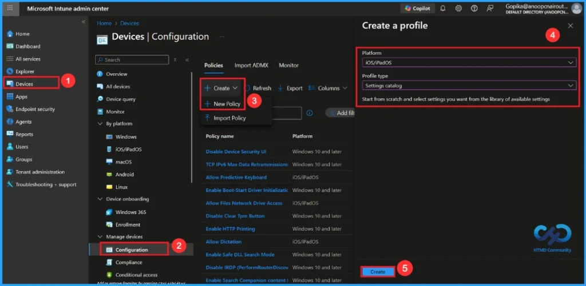
Basic Step for Name and Description
To begin configuring a policy in Intune, start with the Basics step. Here, we can add the name of the policy and give a brief description. Then, click Next to continue.
- Name of the Policy: Allow Cloud Private Relay
- Description: To Allow Cloud Private Relay
- Platform: iOS/iPadOS
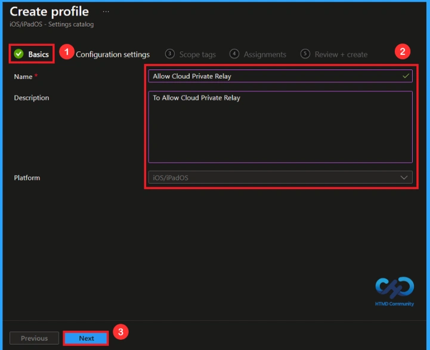
Configuration Settings – Settings Picker
In the Configuration settings tab, click the Add settings button to open the Settings picker. Type Cloud Private Relay or search the category Restrictions in the Search bar. Then Select the Allow Cloud Private Relay.
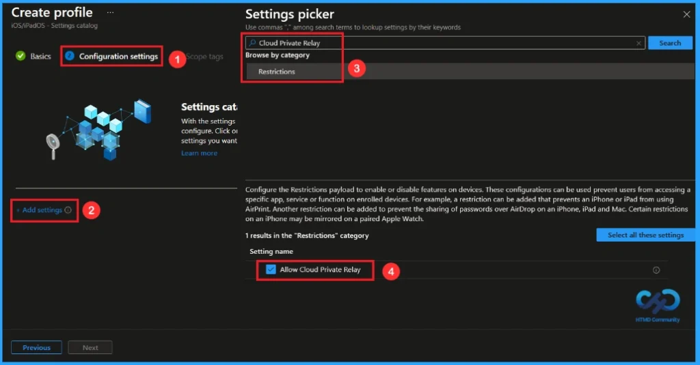
Once you have selected this policy and closed the Settings picker. You will see it on the Configuration page. Here we have only two settings True or False. By default, it will be set to True(Enable). If you want to allow these settings, click on the Next button.
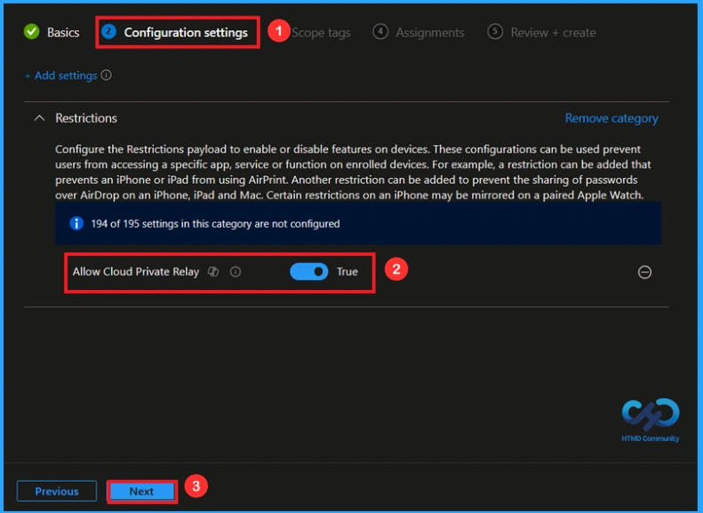
Block Cloud Private Relay
If we blocked or not configure this policy, you can disable the cloud private relay while locked policy by toggling the switch from right to left. Then you can click the Next button to proceed.
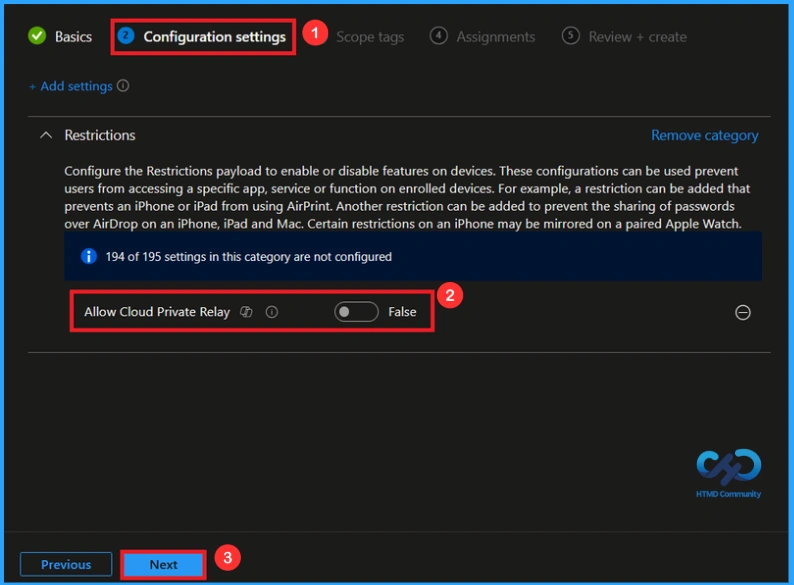
In Intune, Scope Tags are used to control who can view and modify a policy. The scope tag is not mandatory, so you can skip this section. It functions as a tool for organisation and access management, but assigning it is optional. Click Next if they’re not required for your setup.
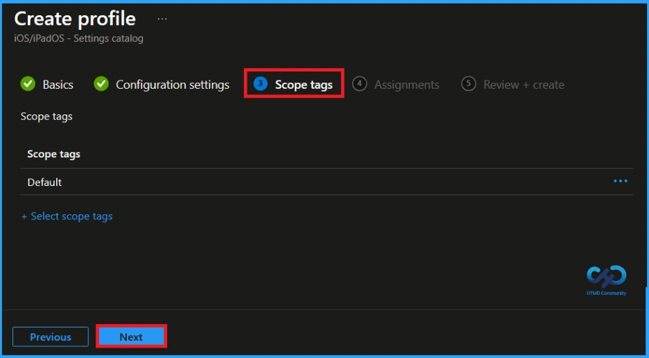
What is Assignments Tab
In the Assignments tab, you choose the users or devices that will receive the policy by clicking Add Group under Include Group, select the group that you want to target (e.g HTMD Supervised Devices – iOS/iPadOs) and then click Next to continue.
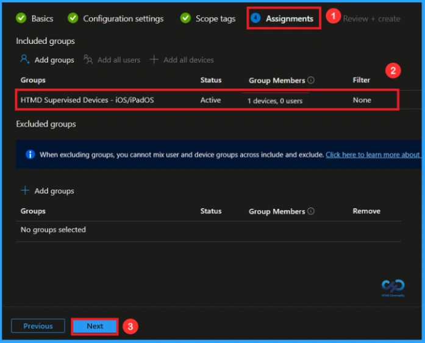
Review + Create Tab
At the final Review + Create step, we see a summary of all configured settings for the new profile; after reviewing the details and making any necessary changes by clicking Previous. We click Create to finish, and a notification confirms that the “Allow Cloud Private Relay relay successfully”.
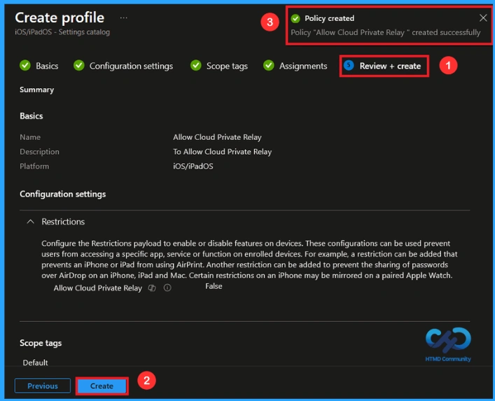
Monitoring Status After Policy Creation
To view a policy’s status, go to Devices > Configuration in the Intune portal, select the policy (Allow Assistant), and check that the status shows Succeeded (1). Use manual sync in the Company Portal to speed up the process.
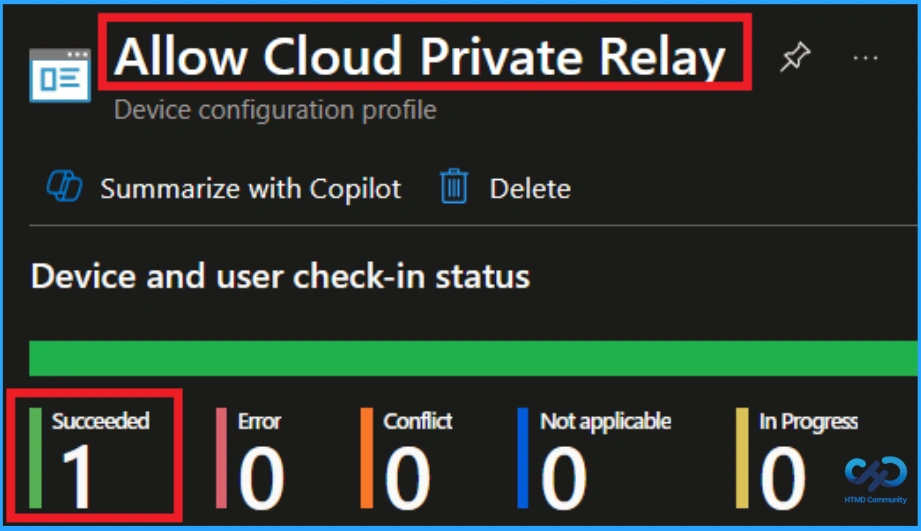
How to Remove Assigned Group from this Policy
After creating the policy, if you want to remove the specific group that you previously selected, you can easily do that. First, go to Devices > Configuration policies. In the Configuration policy section, search and select the policy. In the Assignment section, you will find an Edit option and click on it. Then, click the Remove option.
For detailed information, you can refer to our previous post – Learn How to Delete or Remove App Assignment from Intune using by Step-by-Step Guide.
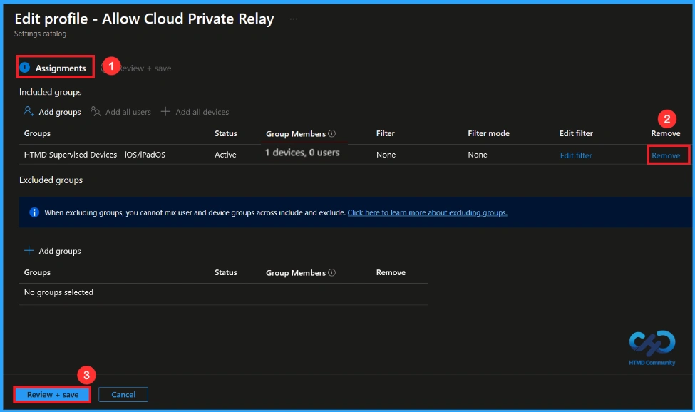
How to Delete this Policy from Intune Portal
If you want to delete this policy for any reason, you can easily do so. First, search for the policy name (Allow Cloud Private Relay)in the configuration section. When you find the policy name, you will see a 3-dot menu next to it. Click on the 3 dots, then click the Delete button.
For detailed information, you can refer to our previous post – How to Delete Allow Clipboard History Policy in Intune Step by Step Guide.
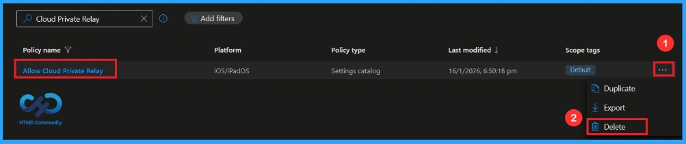
Need Further Assistance or Have Technical Questions?
Need Further Assistance or Have Technical Questions?
Join the LinkedIn Page and Telegram group to get the latest step-by-step guides and news updates. Join our Meetup Page to participate in User group meetings. Also, join the WhatsApp Community and the Whatsapp channel to get the latest news on Microsoft Technologies. We are there on Reddit as well.
Author
Anoop C Nair has been Microsoft MVP from 2015 onwards for 10 consecutive years! He is a Workplace Solution Architect with more than 22+ years of experience in Workplace technologies. He is also a Blogger, Speaker, and Local User Group Community leader. His primary focus is on Device Management technologies like SCCM and Intune. He writes about technologies like Intune, SCCM, Windows, Cloud PC, Windows, Entra, Microsoft Security, Career, etc